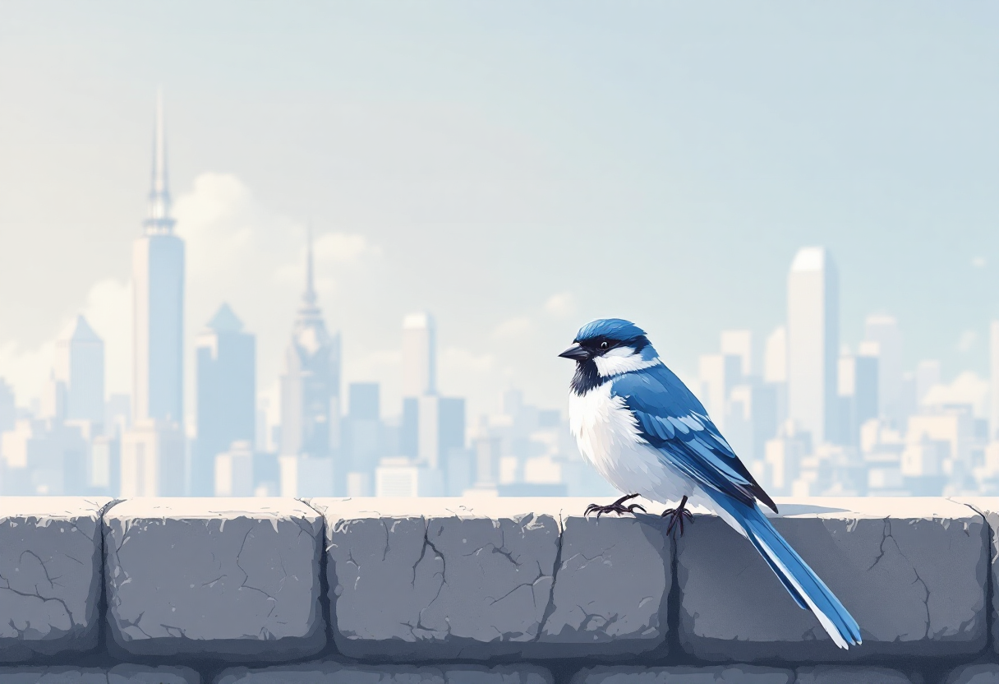
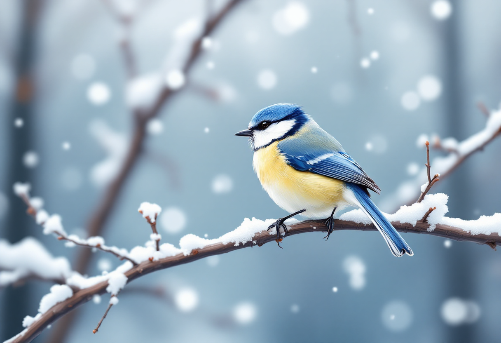
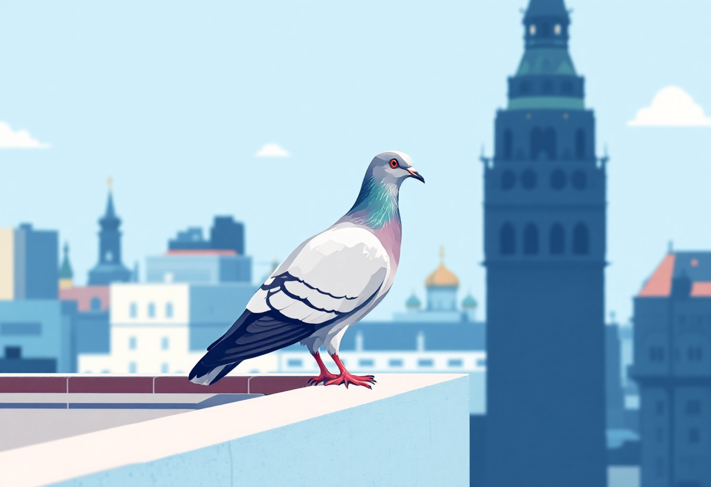

Добро пожаловать в мир птиц Москвы!
В Москве обитает более 200 видов птиц. Некоторые живут здесь круглый год, другие прилетают только на лето или зиму. На этом сайте вы узнаете о самых интересных пернатых обитателях нашего города.

Домовый воробей
Самый распространённый вид птиц в Москве. Живёт рядом с человеком.
Узнать больше

Большая синица
Яркая птичка с жёлтой грудкой. Частый гость кормушек зимой.
Узнать больше

Сизый голубь
Настоящие урбанисты, ставшие неотъемлемой частью городского пейзажа Москвы.
Узнать больше
Интересные факты о птицах Москвы
- В Москве насчитывается более 200 видов птиц
- Самые распространённые - воробьи, голуби и синицы
- Некоторые птицы, как сокол-сапсан, гнездятся на высотках
- Воробьи могут летать со скоростью до 40 км/ч
- Синицы зимой объединяются в стайки с другими мелкими птицами
Птицы по сезонам
В разные времена года в Москве можно встретить разных птиц. Узнайте больше о зимних и летних пернатых обитателях нашего города.